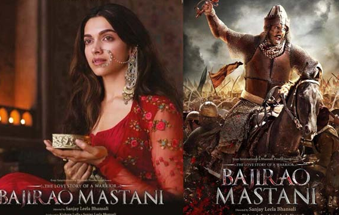
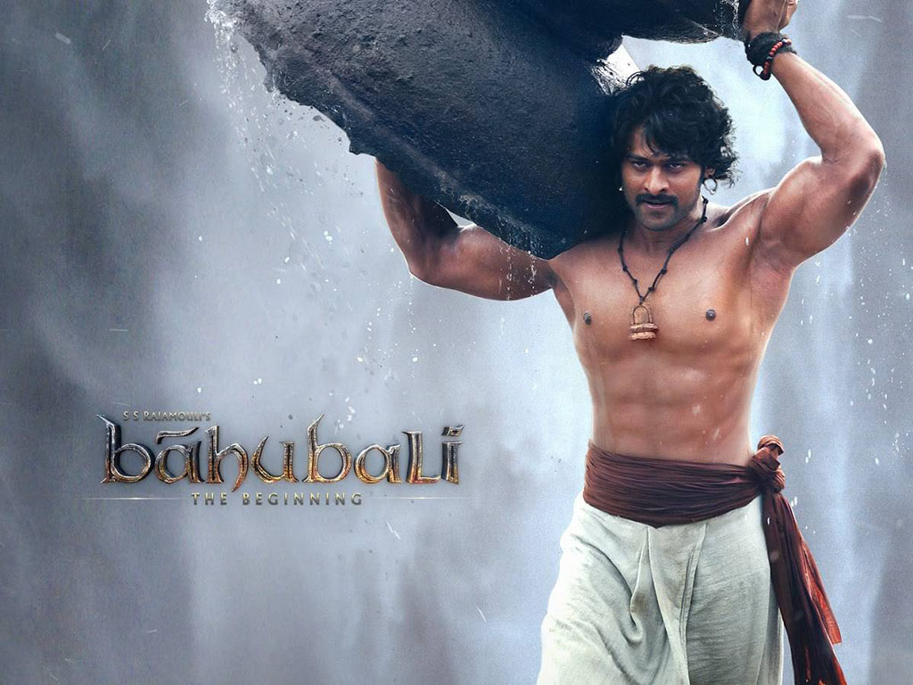
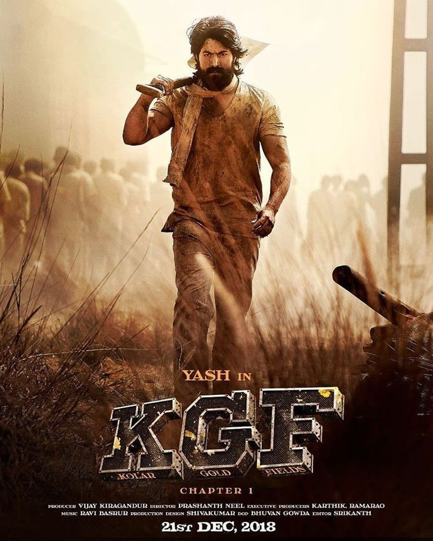

5: War
Ratings : 🌟 6.5
Genre :ActionThriller
Release Date : 2 October 2019
Watch-Time : 2h 32min.
Director : Siddharth Anand
Starring : Hrithik Roshan, Tiger Shroff, Vaani Kapoor
Box-Office : ₹475.50 crore
Storyline:
India's top agent Kabir (Hrithik Roshan) leads the Elite Shadow Unit of R&AW, a compact group of the crème de la crème of the armed forces who are personally trained by him and work with him on various high-risk missions across the world. Among Kabir and Colonel Luthra's key targets are an international arms baron Rizwan Ilyasi who has been key in various acts of terrorism against the country. Khalid (Tiger Shroff) has fought his way up the ranks of the Indian armed forces. His greatest challenge and battle has been to fight against the sins of his father, once a decorated soldier working with Kabir who had turned a traitor. His ambition has been to join Kabir's team to remove any stains on their family name. Kabir is not keen due to their past history, but Colonel Luthra requests him to, and gradually Kabir is also impressed by Khalid's intense dedication and grit. Khalid becomes Kabir's greatest soldier ever, flirting with death repeatedly in mission after mission as they go after.
4: Bajirao Mastani
Ratings : 🌟 7.2
Genre : ActionDramaHistory
Release Date : 18 December 2015
Watch-Time : 2h 38min.
Director : Sanjay Leela Bhansali
Starring : Ranveer Singh, Deepika Padukone, Priyanka Chopra
Box-Office : ₹356 crore
Storyline:
Bajirao 1, who fought over 41 major battles and many others, was reputed never to have lost a single one of them. Bajirao is described as "RANMARD" a man made of and for the battlefield. Bajirao said to his brother "Remember that night has nothing to do with sleep. It was created by God, to raid territory held by your enemy. The night is your shield, your screen against the cannons and swords of vastly superior enemy forces. " A born cavalry leader Bajirao was unequaled for the daring and originality of his genius. Mastani, the fabled warrior princess was the daughter of Raja Chattrasal and his Persian wife Roohani Begum. An expert dancer, singer and warrior, Mastani is sent to battle at the head of the Bundelkhand army. A chance meeting on a war field where they fight on the same side, puts Bajirao and Mastani on a course of passionate love- that is unstoppable by either of their families, by war or by death itself.
3: Tanhaji: The Unsung Warrior

Ratings : 🌟 7.6
Genre : ActionBiographyDrama
Release Date : 10 January 2020
Watch-Time : 2h 15min.
Director : Om Raut
Starring : Ajay Devgn, Saif Ali Khan, Kajol
Box-Office : ₹367.65 crore
Storyline:
Tanhaji is an action epic about the titular Maratha warrior and Shivaji's military commander who lost his father in a battle and grew up to become a fierce warrior with powerful combat skills. When Mughal emperor Aurangzeb recruits his trusted guard Udaybhan to take control of the Kondhana Fort, Shivaji decides not to engage Tanhaji whose son is going to get married soon. However, as Tanhaji learns of Udaybhan's heading towards the fortress, he decides to take charge and stop the rival army from reaching their destination. This doesn't turn out to be easy as Udaybhan finds himself helped by people who don't want Tanhaji to succeed, resulting in battles and attacks that ensue as the plot unfolds.
2: Baahubali: The Beginning
Ratings : 🌟 8.0
Genre : ActionDrama
Release Date : 9 July 2015
Watch-Time : 2h 39min.
Director : S.S. Rajamouli
Starring : Prabhas, Rana Daggubati, Tamannaah, Anushka Shetty, Ramya Krishna, Sathyaraj, Nassar
Box-Office : ₹650 crore
Storyline:
When Sanga and her husband, part of a tribe living around the province of Mahismathi, save a drowning infant, little do they know the background of the infant or what the future holds for him. The kid grows up to as Shivudu, a free-spirit wanting to explore the mountains and in the process learns of his roots and then realizes the whole purpose of his life and ends up confronting the mighty Bhallala Deva!
1.1: K.G.F: Chapter 1
Ratings : 🌟 8.2
Genre : ActionDrama
Release Date : 20 December 2018
Watch-Time : 2h 36min.
Director : Prashanth Neel
Starring : Yash, Srinidhi Shetty, Ananth Nag, Ramachandra Raju, Achyuth Kumar
Box-Office : ₹250 crore
Storyline:
The movie dates back to 1951. Here, two incidents take place; The birth of the hero and other in the Kolar Gold Fields (K.G.F) they get gold. The hero is brought up in poverty. When he is very young itself he goes to Mumbai to become a mafia don. His mother's wish was to see her son rich and powerful. After being in Mumbai for some time he returns back. Will he be able to become a Don? Will he set his people free from the age old slavery? Forms the plot of the movie?
1.2: Uri: The Surgical Strike

Ratings : 🌟 8.2
Genre : ActionDramaWar
Release Date : 11 January 2019
Watch-Time : 2h 18min.
Director : Aditya Dhar
Starring : Vicky Kaushal, Paresh Rawal, Yami Gautam, Mohit Raina, Kirti Kulhari
Box-Office : ₹250 crore
Storyline:
Divided over five chapters, the film chronicles the events of the surgical strike conducted by the Indian military against suspected militants in Pakistan occupied Kashmir. It tells the story of the 11 tumultuous events over which the operation was carried out. Indian army special forces carry out a covert operation to avenge the killing of fellow army men at their base by a terrorist group.